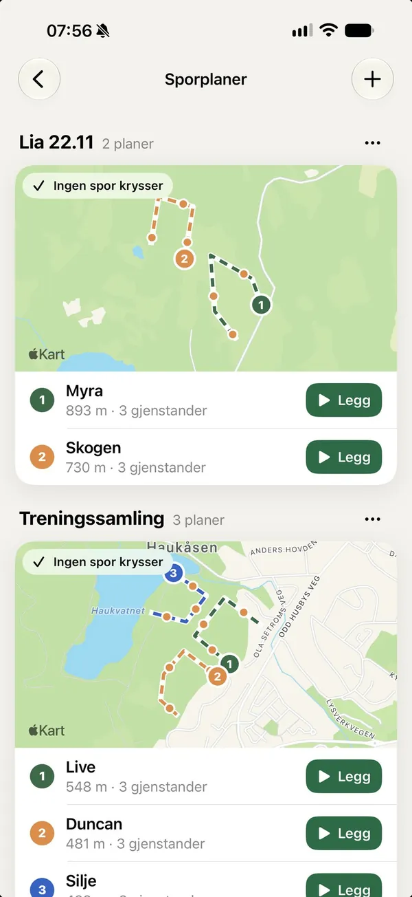
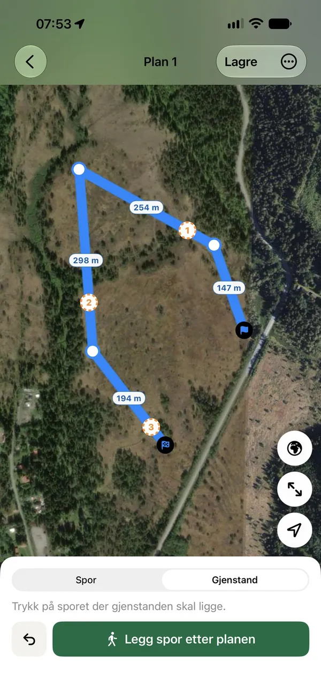
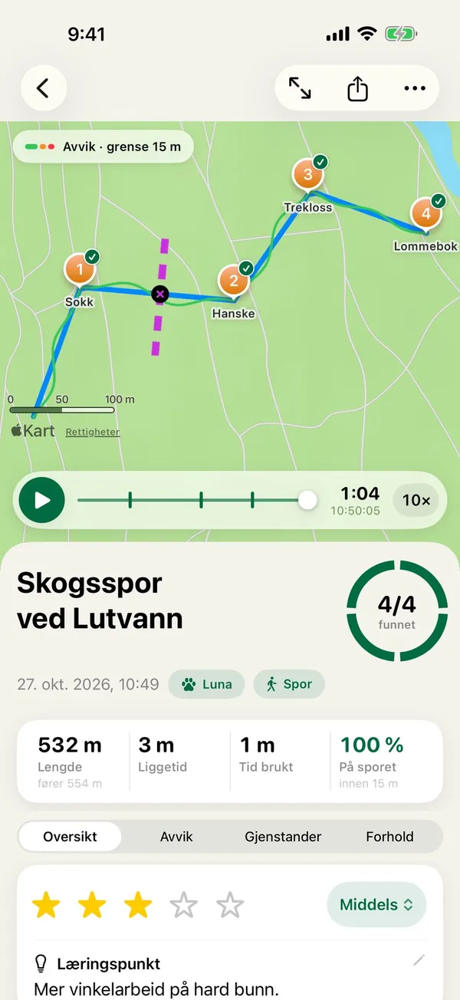

Nytt i Trax
Oppdateringene er gratis for alle som har appen.
Versjon 2.6: Sporplaner
November 2026 · iPhone
Planlegg sporene på kartet hjemme, og legg dem etter planen ute i terrenget.
- Tegn sporet på kartetTrykk inn strekninger og gjenstander, og se lengden på hver strekning og hele sporet.
- Grupper for treningsdagenSamle sporene for samme dag og område på ett kart, og se med én gang om noen krysser eller ligger for nær hverandre.
- Legg spor etter planenPlanen vises stiplet på kartet mens du legger sporet, med de andre sporene i gruppa svakt rundt.
- Del med sporleggerenSend planen til den som skal legge sporet, så havner den rett i Trax. Eller del den som GPX.


Versjon 2.5: Ny spordetalj og hundesiden
Oktober 2026 · iPhone og Android
En ny spordetalj og en egen side for hver hund.
- Ny spordetaljStort kart øverst med avspilling, og faner for Oversikt, Avvik, Gjenstander og Forhold. En ny graf viser avviket langs sporet.
- HundesidenTrykk på poten på hjemskjermen og se nøkkeltall, mål, treningsmomenter og utviklingen for hver hund.
- «Krysser her» på IGP-sporTrykk der kryss-sporet skal gå over, så teller kryssingen i IGP-kravet og du får varsel når hunden sporer forbi.
- Markering i søkLigg, sitt, stå, apport eller forbi på feltsøk, og passiv markering, bringkobbel eller halsmarkering på arealsøk.
- Rett funn etterpåTrykk på en gjenstand i et lagret spor og velg Funnet eller Ikke funnet.
- Stedsnavn og målestokkSpor uten eget navn får stedsnavn og dato, og kartene har fått målestokk.
Spor som venter har fått samme utseende som ferdige spor, IGP-malen snus og feltet i søk formes med ett trykk og drag, og IGP-kravet for FH 2 og FH 3 teller nå kryssinger riktig. «Importer spor» og brukermanualen ligger nå i Innstillinger.
